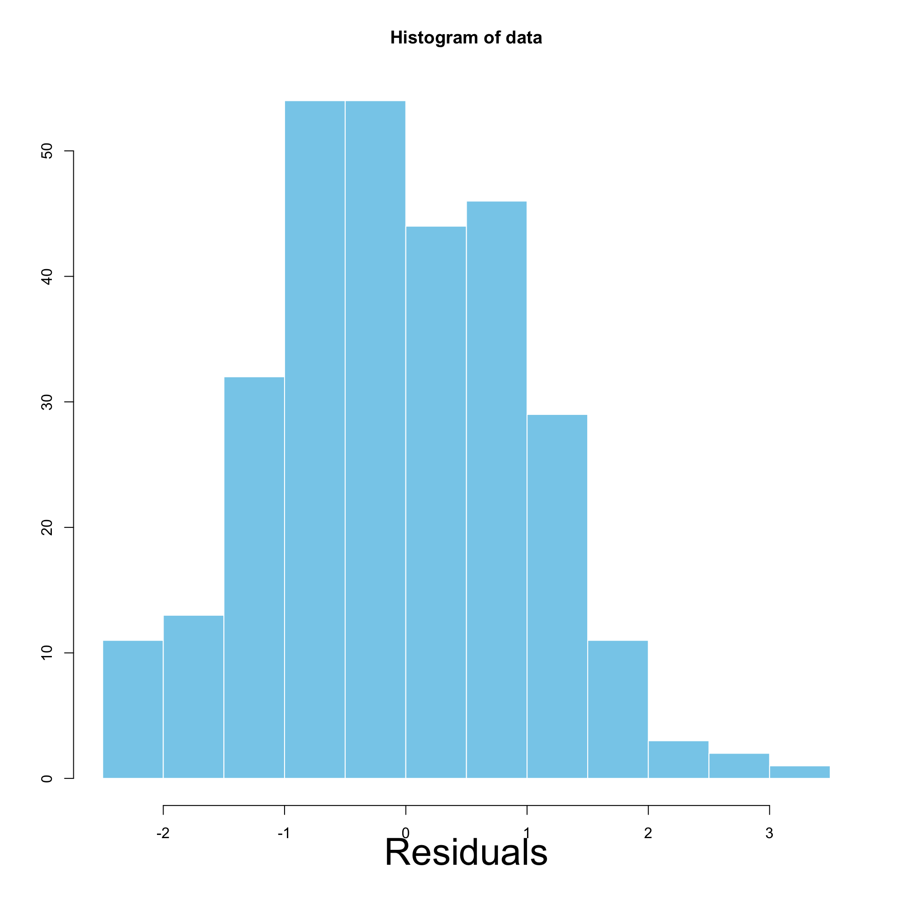
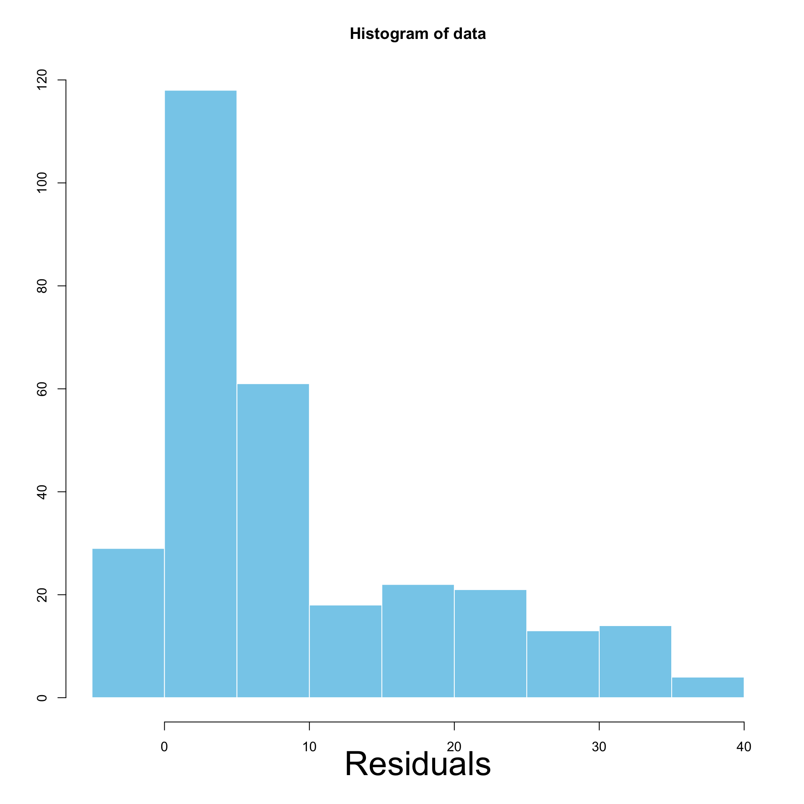
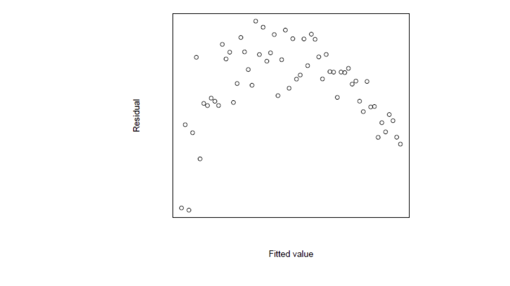
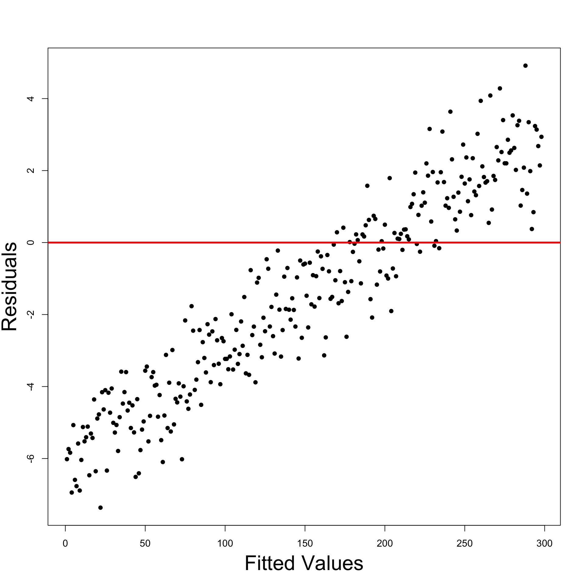
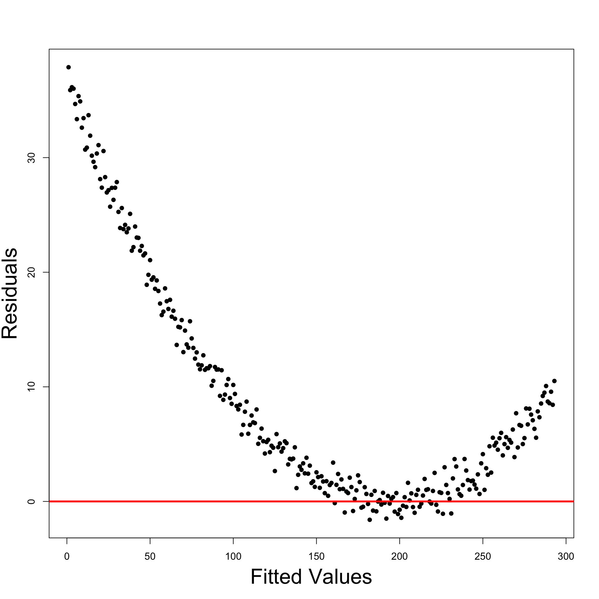

Statistical Models
Lecture 11
Lecture 11:
Violation of regression
assumptions
Outline of Lecture 11
- Regression modelling assumptions
- Heteroscedasticity
- Autocorrelation
- Multicollinearity
Part 1:
Regression assumptions
Regression modelling assumptions
In Lecture 9 we have introduced the general linear regression model
Y_i = \beta_1 z_{i1} + \beta_2 z_{i2} + \ldots + \beta_p z_{ip} + \varepsilon_i
- There are p predictor random variables
Z_1 \, , \,\, \ldots \, , \, Z_p
- Y_i is the conditional distribution
Y | Z_1 = z_{i1} \,, \,\, \ldots \,, \,\, Z_p = z_{ip}
- The errors \varepsilon_i are random variables
Regression assumptions on Y_i
Predictor is known: The values z_{i1}, \ldots, z_{ip} are known
Normality: The distribution of Y_i is normal
Linear mean: There are parameters \beta_1,\ldots,\beta_p such that {\rm I\kern-.3em E}[Y_i] = \beta_1 z_{i1} + \ldots + \beta_p z_{ip}
Homoscedasticity: There is a parameter \sigma^2 such that {\rm Var}[Y_i] = \sigma^2
Independence: rv Y_1 , \ldots , Y_n are independent and therefore uncorrelated
{\rm Cor}(Y_i,Y_j) = 0 \qquad \forall \,\, i \neq j
Equivalent assumptions on \varepsilon_i
Predictor is known: The values z_{i1}, \ldots, z_{ip} are known
Normality: The distribution of \varepsilon_i is normal
Linear mean: The errors have zero mean {\rm I\kern-.3em E}[\varepsilon_i] = 0
Homoscedasticity: There is a parameter \sigma^2 such that {\rm Var}[\varepsilon_i] = \sigma^2
Independence: Errors \varepsilon_1 , \ldots , \varepsilon_n are independent and therefore uncorrelated
{\rm Cor}(\varepsilon_i, \varepsilon_j) = 0 \qquad \forall \,\, i \neq j
Extra assumption on design matrix
- The design matrix Z is such that
Z^T Z \, \text{ is invertible}
- Assumptions 1-6 allowed us to estimate the parameters
\beta = (\beta_1, \ldots, \beta_p)
- By maximizing the likelihood we obtained estimator
\hat \beta = (Z^T Z)^{-1} Z^T y
Violation of Assumptions
We consider 3 scenarios
- Heteroscedasticity: The violation of Assumption 4 of homoscedasticity
{\rm Var}[\varepsilon_i] \neq {\rm Var}[\varepsilon_j] \qquad \text{ for some } \,\, i \neq j
- Autocorrelation: The violation of Assumption 5 of no-correlation
{\rm Cor}( \varepsilon_i, \varepsilon_j ) \neq 0 \qquad \text{ for some } \,\, i \neq j
- Multicollinearity: The violation of Assumption 6 of invertibilty of the matrix
Z^T Z
Part 2:
Heteroscedasticity
Heteroscedasticity
- The general linear regression model is
Y_i = \beta_1 z_{i1} + \beta_2 z_{i2} + \ldots + \beta_p z_{ip} + \varepsilon_i
- We now consider the violation of Assumption 4
- Homoscedasticity: There is a parameter \sigma^2 such that {\rm Var}[\varepsilon_i] = \sigma^2 \qquad \forall \,\, i
- If Assumption 4 is violated we have heteroscedasticity
{\rm Var}[\varepsilon_i] \neq {\rm Var}[\varepsilon_j] \qquad \text{ for some } \,\, i \neq j
Why is homoscedasticity important?
In Lecture 10 we presented a few methods to assess linear models
- Coefficient R^2
- t-tests for parameters significance
- F-test for model selection
The above methods however rely heavily on homoscedasticity
Why is homoscedasticity important?
For example the maximum likelihood estimation relied on the calculation \begin{align*} L & = \prod_{i=1}^n f_{Y_i} (y_i) = \prod_{i=1}^n \frac{1}{\sqrt{2\pi \sigma^2}} \exp \left( -\frac{(y_i - \hat y_i)^2}{2\sigma^2} \right) \\[15pts] & = \frac{1}{(2\pi \sigma^2)^{n/2}} \, \exp \left( -\frac{\sum_{i=1}^n(y_i- \hat y_i)^2}{2\sigma^2} \right) \\[15pts] & = \frac{1}{(2\pi \sigma^2)^{n/2}} \, \exp \left( -\frac{ \mathop{\mathrm{RSS}}}{2\sigma^2} \right) \end{align*}
The calculation is only possible thanks to homoscedasticity
{\rm Var}[Y_i] = \sigma^2 \qquad \forall \,\, i
Why is homoscedasticity important?
- Suppose the calculation in previous slide holds
L = \frac{1}{(2\pi \sigma^2)^{n/2}} \, \exp \left( -\frac{ \mathop{\mathrm{RSS}}}{2\sigma^2} \right)
- Then maximizing the likelihood is equivalent to solving
\min_{\beta} \ \mathop{\mathrm{RSS}}
- The above has the closed form solution
\hat \beta = (Z^T Z)^{-1} Z^T y
Why is homoscedasticity important?
- Without homoscedasticity we would have
L \neq \frac{1}{(2\pi \sigma^2)^{n/2}} \, \exp \left( -\frac{ \mathop{\mathrm{RSS}}}{2\sigma^2} \right)
Therefore \hat \beta would no longer maximize the likelihood!
In this case \hat \beta would still be an unbiased estimator for \beta
{\rm I\kern-.3em E}[\hat \beta ] = \beta
Why is homoscedasticity important?
However the quantity S^2 = \frac{ \mathop{\mathrm{RSS}}(\hat \beta) }{n-p} is not anymore unbiased estimator for the population variance \sigma^2 {\rm I\kern-.3em E}[S^2] \neq \sigma^2
This is a problem because the estimated standard error for \beta_j involves S^2 \mathop{\mathrm{e.s.e.}}(\beta_j) = \xi_{jj}^{1/2} \, S
Therefore \mathop{\mathrm{e.s.e.}} becomes unreliable
Why is homoscedasticity important?
Then also t-statistic for significance of \beta_j becomes unreliable
This is because the t-statistic depends on \mathop{\mathrm{e.s.e.}}
t = \frac{ \hat\beta_j - \beta_j }{ \mathop{\mathrm{e.s.e.}}}
- Without homoscedasticity the regression maths does not work!
- t-tests for significance of \beta_j
- confidence intervals for \beta_j
- F-tests for model selection
- They all break down and become unreliable!
Is heteroscedastcity a serious problem?
Heteroscedasticity in linear regression is no longer a big problem
This is thanks to 1980s research on robust standard errors (more info here)
Moreover heteroscedasticity only becomes a problem when it is severe
How to detect Heteroscedasticity
- Heteroscedasticity is commonly present in real-world datasets
- We should be able to detect it
- There are formal tests (see [1])
- Goldfeldt-Quant test
- White’s test for heteroscedasticity
How to detect Heteroscedasticity
- Alternative: graphical checks
- Simpler and more robust
- They involve studying the model residuals
r_i := y_i - \hat y_i
By definition r_i is sampled from \varepsilon_i
We have heteroscedasticity if
{\rm Var}[\varepsilon_i] \neq {\rm Var}[\varepsilon_j] \, \quad \, \text{ for some } \, i \neq j
- This implies the residuals r_i have different variance
Graphical checks
First method: Histogram of residuals
- If heteroscedasticity is present then:
- Residuals have different variance
- Histogram will display asymetric pattern
- If no heteroscedasticity is present then:
- Homoscedasticity assumption holds
- Residuals have same variance
- Histogram will look like normal distribution N(0,\sigma^2)
Interpretation of Histograms
Left: Homoscedastic \qquad\quad\quad Right: Heteroscedastic

Graphical checks
Second method: Residual graphs
- Residual graphs are plots of
- Residuals against fitted values
- Squared residuals against fitted values
- There are certain common patterns associated with heteroscedasticity
- Important to recognize such patterns
- More on this in the book [2]
Interepretation of Residual Graphs
- No systematic pattern:
- Suggests no heteroscedasticity
- Corresponds to constant variance
- Homoscedasticity assumption holds
- Residuals resemble sample N(0,\sigma^2)
- About half residuals negative and half positive
- Vertical spread is comparable
Interepretation of Residual Graphs
Patterns implying Heteroscedasticity
Funnelling out of residuals
Funnelling in of residuals
Linear residuals – Proportional to \hat y_i
Quadratic residuals – Proportional to \hat{y}^2_i
In these special cases we can transform the data to avoid heteroscedasticity
Funnelling out of residuals

Funnelling in of residuals
Linear and Quadratic residuals


Remedial transformations
- To try and reduce heteroscedasticity we can
- transform the data y
- A tranformation which often helps is
- \, \log y
- For linear and quadratic patterns you can try
- \, y^2
- \, \sqrt{y}
Remedial transformations
Heteroscedasticity can be associated with some of the X-variables
- In this case plot the residuals or squared residuals against X
The book [1] discusses two cases
- The error variance is proportional to X^2_i {\rm Var}[\varepsilon_i] \, \approx \, \sigma^2 \, X^2_i
- The error variance is proportional to X_i {\rm Var}[\varepsilon_i] \, \approx \, \sigma^2 \, X_i
In each case divide through by the square root of the offending X-term
Error variance proportional to X_i^2
- Start with the model
Y_i = \beta_1 + \beta_2 X_{i} + \varepsilon_i
- Divide through by X_i
\begin{equation} \tag{1} \frac{Y_i}{X_i} = \frac{\beta_1}{X_i}+\beta_2+\frac{\varepsilon_i}{X_i} \end{equation}
- Estimate equation (1) with usual least squares regression approach
Error variance proportional to X_i
- Start with the model
Y_i = \beta_1 + \beta_2 X_{i} + \varepsilon_i
- Divide through by \sqrt{X_i}
\begin{equation} \tag{2} \frac{Y_i}{\sqrt{X_i}} = \frac{\beta_1}{\sqrt{X_i}}+\beta_2 \sqrt{X_i} + \frac{\varepsilon_i}{\sqrt{X_i}} \end{equation}
- Estimate equation (2) with usual least squares regression approach
Analysis of regression residuals in R
We need R commands for residuals and fitted values
Fit a linear model as usual
- To obtain fitted values \hat y_i
- To obtain the residual values \varepsilon_i = y_i - \hat y_i
Example: Stock Vs Gold prices
The full code for the example is available here residual_graphs.R
Stock Vs Gold prices data is available here stock_gold.txt
Read data into R and fit simple regression
- Plot: Residuals look heteroscedastic
- Most points are below the line
- Points under the line appear more distant
- Histogram: Confirms initial intuition of heteroscedasticity
- Residuals are not normally distributed
- Residuals have different variance (skewed histogram)

- Residual Graph: Displays funnelling out pattern
- We definitely have heteroscedasticity
- Remedial transformation: To try and reduce heteroscedasticity take
- \, \log y
- This means we need to fit the model
\log Y_i = \alpha + \beta X_i + \varepsilon_i
- Heteroscedasticity has definitely improved
- Left: Residual plot for original model
- Right: Residual plot for \log y data model

- Heteroscedasticity has definitely improved
- Left: Histogram of residuals for original model
- Right: Histogram of residuals for \log y data model

Part 2:
Autocorrelation
TBA
Part 3:
Multicollinearity
TBA
References
[1]
Gujarati, D. N., Porter, D. C., Basic econometric, fifth edition, McGraw-Hill, 2009.
[2]
Draper, N. R., Smith, H., Applied regression analysis, Wiley, 1998.